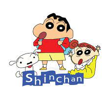
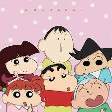

Crayon Shin-chan (Japanese: クレヨンしんちゃん, Hepburn: Kureyon Shin-chan), is a Japanese manga series written and illustrated by Yoshito Usui. Crayon Shin-chan made its first appearance in 1990 in a Japanese weekly magazine called Weekly Manga Action, which was published by Futabasha. Due to the death of author Yoshito Usui, the manga in its original form ended on September 11, 2009. A new manga began in the summer of 2010 by members of Usui's team,[5] titled New Crayon Shin-chan (新クレヨンしんちゃん, Shin Kureyon Shin-chan). An animated television adaptation began airing on TV Asahi in 1992 and is still ongoing on several television networks worldwide and has over 1000 episodes. The show has been dubbed in 30 languages which aired in 45 countries.[6]
Synopsis
Set in Kasukabe, Saitama Prefecture, Japan, the series follows the adventures of the five-year-old Shinnosuke "Shin" Nohara and his parents, baby sister, dog, neighbours, and best friends. Most of the plot is about Shin-chan's daily life, but it is also often interspersed with a lot of fantastic and incredible elements. Many of the jokes in the series stem from Shin-chan's occasionally weird, unnatural and inappropriate use of language, as well as from his mischievous behaviour. Consequently, non-Japanese readers and some viewers may find it difficult to understand his jokes. Some gags may require an understanding of Japanese culture and/or language to be fully appreciated; for example, his "Mr. Elephant" impression, while being transparently obvious as a physical gag, also has a deeper resonance with contemporary Japanese culture since it refers to the popular Japanese children's song "Zou-san" (ぞうさん). But after modest translation, it is popular in the rest of Asia due to cultural compatibility. It also contains many sarcastic jokes and stereotype humor. The series is mainly in comedy style with a lot of sexual innuendo. However, due to its popularity, it's also stylistically as family-friendly as possible, although it may not apply to anywhere. Most of episodes are about the importance of family and friends. On rare occasions, it also has some darker episodes like Miss Matsuzaka's boyfriend passing away in the manga, due to this circumstance it was not adapted into an anime episode.It also includes several horror adaption for example "The Line of no End", "The Horrible Elevator", "The Kindergarten Stairs", etc. Shin-chan regularly becomes besotted with pretty female characters who are much older than him, and an additional source of humor is derived from his childlike attempts at wooing these characters, such as by asking them (inappropriately, on several levels) "Do you like green peppers?" (ピーマン好き?) (because he hates green peppers so much). He continually displays a lack of tact when talking to adults, asking questions such as "How many times did you go to the police?" to tough-looking men or "How old are you?" to elderly people. He is often shown with bare buttocks to emphasize the nonsensical jokes
Media
Crayon Shin-chan, written and illustrated by Yoshito Usui, debuted in Futabasha's seinen manga magazine Weekly Manga Action in 1990. It started as a spin-off of the character Shinnosuke Nikaido (二階堂信之介) of another series by Yoshito Usui, Darakuya Store Monogatari (だらくやストア物語). The chapters were collected into 50 tankōbon volumes, which were published under Futabasha's Action Comics imprint, from April 11, 1992, to July 10, 2010.[7][8] Yoshito Usui died on September 11, 2009, after a fall at Mount Arafune. After Usui died, Futabasha originally planned to end Crayon Shin-chan in November 2009. Upon discovering new manuscripts, Futabasha decided to extend the comic's run until the March 2010 issue of the magazine, which shipped on February 5, 2010.[9] Although the series formally ended on February 5, 2010, it was announced on December 1, 2009, that a new manga would begin in the summer of 2010 by members of Usui's team,[5] titled New Crayon Shin-chan (新クレヨンしんちゃん, Shin Kureyon Shin-chan). A series of four bilingual Japanese-English manga were released in 1996 in Japan as Shin-chan: The Little Horror! (クレヨンしんちゃんの楽しいゾ英会話).[10] ComicsOne translated ten volumes of Crayon Shin-chan into English and released it in the United States of America. Occasional pop culture references familiar to Americans, such as Pokémon and Britney Spears, were added to increase the appeal to American audiences. The manga is mirrored from its original to read from left to right.[11] Starting with the sixth volume, many of the names were changed to the ones used in the Vitello and Phuuz English version of the anime, even though the dub never aired in North America. This translation is rated Teen.[12] Since then, American publisher DrMaster took over the licenses of several manga series, including Crayon Shin-chan, from ComicsOne. No new volumes of Crayon Shin-chan were released under the DrMaster imprint. On July 28, 2007, DC Comics' manga division CMX announced the acquisition of the Crayon Shin-chan manga. The CMX version is rated Mature instead of Teen from ComicsOne, because of nudity, sexual humor, dirty and bad language. The first volume was released on February 27, 2008, with uncensored art, and the style of jokes that frequent the Adult Swim dub with some throw backs to the original version, such as his original greeting. However, volume 10 omitted a gag which was in the ComicsOne version. On April 11, 2012, One Peace Books announced their release of the manga, which is a reprint of the CMX version, in an omnibus format.[13] Three omnibus volumes were released simultaneously on October 15, 2012. Volume 4 was released on November 13, 2013, and included the Japanese volume 12, marking the first time that particular volume has an English translation. The Crayon Shin-chan manga spin-off, Action Mask, is currently available as read-only/print-only subscription from Crunchyroll and Futabasha.[14] The main Shin-chan manga is also available from Crunchyroll using the CMX version, concurrently up to volume 10.[15]